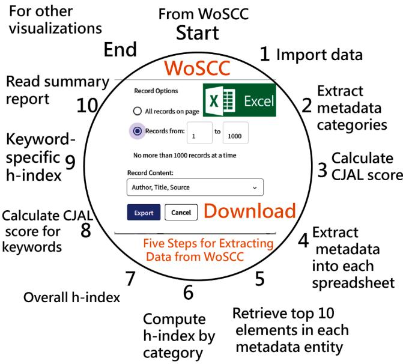
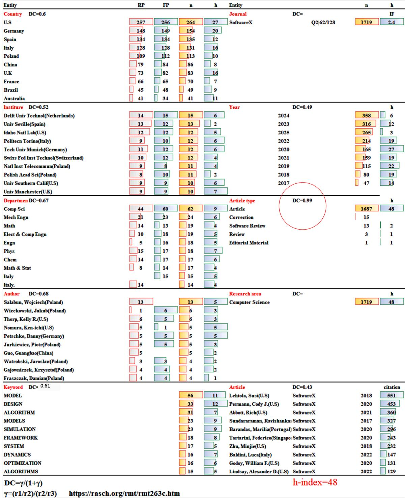
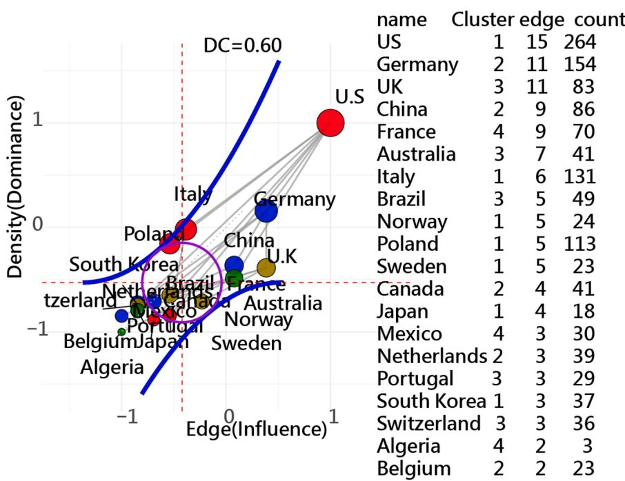
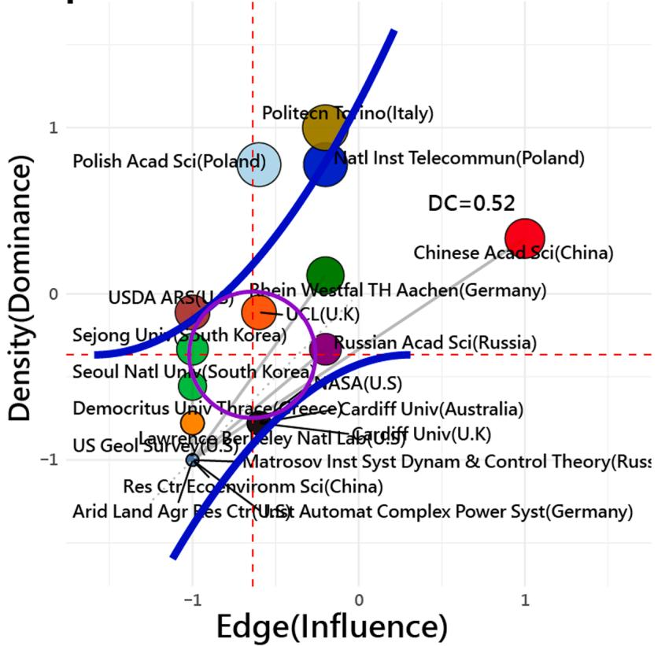
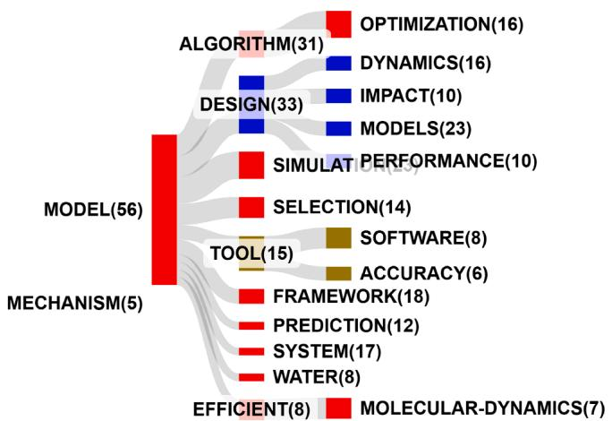

Original Software Publication
10StepsinExcelforWoS: Streamlining bibliometric analysis in web of science using Microsoft excel¶
Tsair-Wei Chien a, Willy Chou b,c,*
a Department of Medical Research, Chi Mei Medical Center, Tainan, Taiwan
b Department of Leisure and Sports Management, CTBC University, Tainan, Taiwan
c Department of Physical Medicine and Rehabilitation, Liouying Chi-Mei Hospital, Tainan 736, Taiwan
A R T I C L E I N F O¶
Keywords: Bibliometric analysis Web of science Excel VBA Data wrangling Visualization framework
A B S T R A C T¶
Numerous bibliometric studies utilize professional software to generate visualizations from specialized text files downloaded from the Web of Science Core Collection (WoSCC). However, when using Microsoft Excel (MS Excel) files exported from WoSCC, researchers often face a series of manual and cumbersome data preprocessing tasks that hinder efficiency. To address this challenge, this study proposes a streamlined framework—10StepsinExcelforWoS—to facilitate bibliometric analysis using MS Excel. A total of 1719 articles published in the journal of SoftwareX between 2017 and 2025 were retrieved from WoSCC. The proposed method involves 10 sequential steps implemented via Visual Basic for Applications (VBA) within Excel to wrangle the data. Two types of visualizations were demonstrated: (1) a summary report for performance analysis and (2) Kano and Sankey diagrams to identify dominant entities in bibliometric research since 2017. Key findings identified the United States as the leading country; Delft University of Technology (Netherlands) as the top institution; the Department of Computer Science as the most prevalent affiliation—appearing across 60 uni versities for first authors and 42 for corresponding authors; Wojciech Salabun (Poland) as the most prolific author; and “MODEL” as the most prominent keyword.This study concludes that the 10StepsinExcelforWoS offers a practical, transparent, efficient, and reproducible workflow for conducting nuanced bibliometric analyses directly in MS Excel.
Metadata¶
| Nr | Code metadata description | Metadata |
| C1 | Current code version | v1.0 |
| C2 | Permanent link to code/repository used for this code version | https://github.com/smilechien/10StepsinExcelforWoS/ |
| C3 | Permanent link to reproducible capsule | Reproducible capsule (see Appendix, Table S1) |
| C4 | Legal code license | ExcelWoS-2.0 License |
| C5 | Code versioning system used | git |
| C6 | Software code languages, tools and services used | Excel VBA |
| C7 | Compilation requirements, operating environments and dependencies | v1.0; install dependencies from requirements.txt; runs in browser on Windows |
(continued )
| Nr | Code metadata description | Metadata |
| C8 | If available, link to developer documentation/ manual | [Developer documentation with MP4 video]Documentation and tutorial video (see Appendix, Table S1) |
| C9 | Support email for questions | rasch.smile @gmail.com |
1. Motivation and significance¶
In recent years, bibliometric analysis has become a cornerstone in evaluating academic productivity, research trends, and scholarly impact across disciplines [1]. While professional tools like CiteSpace[2], VOSviewer[3], and Bibliometrix[4] are widely adopted to generate visualizations from standardized text files exported from the Web of Science Core Collection (WoSCC)[5], their functionality often relies on specific file formats and predefined workflows. In contrast, Excel-exported
WoSCC files, although widely accessible, typically require laborious manual preprocessing steps before they can be used for in-depth bib liometric research(e.g., publications [1,6–8] that rely on the R platform [9]). These steps include data filtering, field standardization, metadata restructuring, and summary table generation—tasks that are both time-consuming and prone to inconsistency, especially for novice users.
1.1. Research gaps in current bibliometric workflows¶
Despite the maturity of bibliometric software, several gaps remain in the practical workflow for researchers aiming to use Excel-based outputs:
(1) Lack of streamlined preprocessing for Excel data: Researchers often face tedious, repetitive operations when attempting to clean and structure raw Excel data from WoSCC, which hinders reproducibility and deters early-career scholars.
(2) Insufficient integration of VBA-based automation: Few studies leverage Microsoft Excel’s scripting capabilities (i.e., Visual Basic for Applications, VBA) to automate and simplify these bibliometric tasks.
(3) Limited reproducible frameworks for non-specialists: Most bibliometric tools require some level of software familiarity (e.g., Java, R, Python), which creates a barrier for users with limited programming backgrounds. Moreover, the non-transparency of the data source will hinder the reproducibility of some corre sponding studies [10].
(4) Ranking only for metadata elements: Traditional bibliometric methods rely on frequency-based rankings, lacking analytical depth. The underused dominance coefficient (DC) [11,12] can quantify gaps between top-ranked elements.
1.2. Addressing the practical needs of bibliometric researchers¶
Exploring graphs (e.g., slope, summary report, or other charts) is crucial for researchers, as they offer a clearer view of complex temporal relationships in bibliometric data [1]. For example, adopting slope graphs enhances the interpretability of time-series data, improves trend identification, and conveys comparative dynamics more effectively. However, methods for extracting core elements are based on sufficient data collected with datasets (e.g., those in MS Excel).That is, the quality and accuracy of those graph visualizations depend heavily on rigorous data wrangling prior to analysis.
Bibliometric data exported from databases like WoSCC often contain inconsistencies, duplicates, and unstructured metadata across key variables such as publication year, affiliation, and keywords [10]. Without proper cleaning, restructuring, and filtering, the input data may lead to misleading or cluttered visualizations. Therefore, data wrangling is a foundational step to ensure that only statistically relevant and compa rably formatted elements are fed into visualization tools like slope graphs, ultimately enabling more precise and meaningful insights into scholarly trends over time. Likewise, data wrangling before conducting performance analysis of metadata entities is essential to ensure the generation of reliable and interpretable summary reports. However, the technique of ’data mugging’—the systematic extraction and restructuring of key bibliometric fields—has received limited attention in previous studies [1].
To close these gaps, there is a pressing need for a lightweight, transparent, and reproducible Excel-based framework that facilitates bibliometric analysis without depending on complex software environments. Such a solution would be especially valuable in educational settings or for interdisciplinary researchers who may not have access to specialized bibliometric platforms.
1.3. Challenges of reproducibility and transparency in bibliometric studies¶
Previous bibliometric case studies have struggled with reproduc ibility and transparency due to incomplete disclosure of data-processing steps and opaque workflows. As Liu [10] noted, reporting “Web of Science Core Collection” without specifying subsets (e.g., SCI-Expanded, SSCI), coverage years, or search date undermines reproducibility. Moreover, database-focused studies document concrete inconsistencies that can bias results, including coverage/indexing differences across WoS and Scopus; incomplete or erroneous funding acknowledgments; missing/ambiguous author–affiliation links; document-type and Early Access mislabeling; uneven identifier coverage (ORCID/ResearcherID); and variable availability of abstracts, Author Keywords, and Keywords Plus [13–18].
To address these issues, our framework operationalizes a transparent, auditable pipeline: (i) record full data provenance (database, subsets, years, search date); (ii) normalize authors, affiliations, docu ment types, Early Access, and keyword fields; (iii) de-duplicate primarily by DOI (with title-based fallback); (iv) log every transformation; and (v) perform analyst-supervised identity checks that combine full names with affiliation/country, using ORCID where available. The workflow is implemented in Excel/VBA (“10StepsinExcelforWoS”) and integrates DC analysis [11,12], thereby standardizing wrangling, strengthening quality control, and improving reproducibility.
1.4. Study goal and contribution¶
This study proposes a novel framework titled 10StepsinExcelforWoS (or ExcelWoS for short), which utilizes a 10-step VBA-powered process in Microsoft Excel (MS Excel) to streamline bibliometric data wrangling, visualization, and performance reporting. The method was applied to analyze articles indexed in WoSCC. Two types of visual outputs were generated:
(1) a summarized performance report [1] based on ten key met adata elements, and
(2) Kano and Sankey diagrams [1,19–21] to identify dominant countries in bibliometric publishing.
By validating this Excel-based approach, the study aims to enhance the transparency, accessibility, and reproducibility of bibliometric research. The framework also responds to growing demands for simplified tools that support nuanced academic insights.
This study aims to evaluate whether a structured, VBA-powered Excel workflow—implemented through the 10StepsinExcelforWoS framework—can generate bibliometric visualizations and performance analyses that are comparable in clarity and analytical value to those produced by specialized software, while offering improved accessibility, usability, and reproducibility.
2. Software description¶
To streamline bibliometric analysis using MS Excel, this study developed a standardized 10-step “ExcelWoS” framework. This approach employs VBA to automate data wrangling, performance summarization, and visualization tasks for records exported from the database of WoSCC.
2.1. Software architecture¶
2.1.1. Summary report created in MS excel¶
Before creating the summary report, author-made MS-Excel module [22] and instruction with MP4 video[23] can be downloaded and viewed on the R-platform[9].
10StepsinExcelforWoS Framework

raschonline.com/raschonline/wosextractdataabc2bkaa.zip
Fig. 1. 10StepsinExcelforWoS Framework through 10 steps for data mugging with the MS Excel file in zip.
2.1.2. Five steps for extracting data from WoSCC¶
The following steps outline the procedure for extracting and orga nizing data exported from WoSCC using the downloaded Excel tool [22]:
-
Insert Journal Impact Factors: Ensure that the Journal Impact Factors (e.g., from Journal Citation Reports: Impact Factor List 2025 [24]) are deposited in Sheet1 of the spreadsheet.
-
Rename Downloaded Files Using R: Use the provided R script to rename all Excel files downloaded into the wos folder. This ensures consistent naming for batch processing [25].
-
Set File Path and Verify File List: Open the designated Excel file (e. g., named data) and set the file path to:
C:\Users\user\Downloads\wos\
Confirm that the renamed file names are listed vertically from cell A2 downward.
-
Activate VBA Import: Click the “From WoS in folder” macro button. This will trigger the VBA automation process to import data from each listed file.
-
Consolidate Data into ALL Worksheet: In the “ddd” worksheet, click the icon labeled “Paste data into All in AG.” This action automatically transfers and consolidates the imported data into the ALL worksheet, ready for further data wrangling and analysis.
2.1.3. Keywords from keyplus to top 10 using R script¶
The R script [26] was applied to obtain top 10 keywords pasted to the spreadsheet of author at the cell of A82 downward.
2.2. Software functionalities and steps for implementing excelwos¶
To emphasize the importance of reproducibility in bibliometric research [27], we parsed the WoSCC Excel export fields (e.g., Authors, Affiliations, Countries), in which multiple entries are separated by semicolons (;). Using the split function in MS Excel VBA, we also marked special tokens such as the corresponding author and their affiliation details (e.g., Mengist, W (corresponding author)).
2.2.1. infographic design for 10StepsinExcelforWoS¶
Click on icons 1 to 10 in the two spreadsheets titled “ALL” and
“author,” following these 10 steps (Fig. 1):
2.2.2. Ten steps for arranging data in MS excel¶
-
Import data: Transfer content from cell AG1 to A1 in the ALL spreadsheet.
-
Extract metadata categories: Use the Country field in the ALL spreadsheet to extract metadata categories.
-
Calculate CJAL score: Compute the CJAL score using the provided metrics [28,29].
-
Extract metadata each: Collect all relevant metadata (e.g., keywords and KeyPlus) into the spreadsheet.
-
Obtain Top 10 elements: In the author spreadsheet, retrieve the top 10 elements for each metadata entity.
-
Compute h-index by category: In column Y, calculate the h index for each metadata category (excluding keywords).
-
Overall h-index: Refer to cell author!AD94 for the overall hindex across all articles.
-
Calculate CJAL score for keywords: Use rows 82 to 91 in the keyword section to calculate the CJAL score for each keyword [28,29].
-
Keyword-specific h-index: Use columns V82 to Y82 to compute the h-index [30] for each keyword.
-
Read summary report: Click on the spreadsheet titled “10descriptionmap” to view the final summary report.
2.3. Sample code snippets¶
2.3,1. R platform for visuals using Kano and Sankey diagrams¶
It is recommended to use visual coding scripts [31] for generating Kano and Sankey diagrams, utilizing a CSV file (e.g., country.csv) containing keyword co-occurrence data. The resulting Kano diagram categorizes entities into four quadrants: Leader, Lone Wolf, Follower, and Coworker. Classification is based on the Dominance Coefficient (DC) [11,12], which quantifies relative influence. Leadership strength is further divided into five tiers: Super $( \mathrm { D C } \ge 0 . 8 )$ , Quasi-Super $( \mathrm { D C } \geq 0 . 7 ) ,$ Strong $( \mathrm { D C } \geq 0 . 6 )$ , Moderate $( \mathrm { D C } \geq 0 . 5 ) _ { \mathrm { : } }$ , and Weak $( \mathrm { D C } < 0 . 5 )$ [32]. As such, incorporating DC with KD [19,21] (or Sankey diagram[1]) enhances clarity by illustrating dominance or imbalance across metadata entities, offering more insightful bibliometric evaluation.
Based on structured reports suggested by authors [1], the findings were presented in two subsections: (1) Performance Analysis Findings and (2) Visualization Outputs.
2.3.2 R package used in this study¶
Visualizations in R created on the R platform [31] were used to draw Kano and Sankey diagrams. All data processing and statistical analyses were conducted using R software version 4.1.3 [33], and the generation of time-series visualizations and result output was performed within the RStudio integrated development environment [34].
3. Illustrative examples¶
3.1. Data source¶
In line with recommendations by Liu [10], we explicitly disclose the details of the dataset used in this study. Articles were retrieved from the Web of Science Core Collection (WoSCC), including both the Science Citation Index Expanded (SCI-Expanded) and the Social Sciences Citation Index (SSCI). The coverage period was from 2017 to 2025, with the search conducted on July 29, 2025. By specifying both the subsets and the temporal coverage, this study ensures full transparency and facilitates reproducibility for future bibliometric investigations.
These articles were retrieved to identify leading metadata categories and verify the study hypothesis. Study data are deposed in Github [35]. Since all articles stored in WoSCC do not contain identifiable patient
Performance analytics of 10-element entities by counts, and DC for each entity(n=1,719)¶

Fig. 2. Summary report for article elements in bibliometric research since 2017.
Top 20 collaboration countries

Fig. 3. Country-bases leader DC strength.
information, ethical review approval was not required.
3.2. Demonstrations of data via 10StepsinExcelforWoS¶
3.2.1 Performance analysis findings¶
Fig. 2 displays a performance summary report outlining major contributors and corresponding counts across ten key metadata categories in bibliometric research from 2017 to 2025. The analysis incorporates metrics such as the number of publications by corresponding authors (RP), first authors (FP), h-index values [30], and DC scores [11,12]. In total, 1719 articles were analyzed, with an overall h-index of 48.
Key insights drawn from the performance report include the leading contribution of United States, with Delft Univ Technol (Netherlands) as the most prolific institution, and the Department of Computer Science as the most frequently listed organizational affiliation. Wojciech Salabun from Poland emerged as the most productive author, and SoftwareX as the most common journal as expected. Other dominant attributes include the year 2024, the document type "Article", the Department of Computer Science as the most prevalent affiliation—appearing across 60 universities for first authors and 42 for corresponding authors, and the most frequent keyword “MODEL” Notably, the most cited pub lication—a 2018 article by Susi Lehtola(U.S)—received 551 citations.
Among all top-performing entities, only the document type "Article" achieved a DC score above 0.70 (DC = 0.99), suggesting that no other entity held a clearly dominant position (i.e., >0.7) within its respective category during the study period.
3.2.2 Visualization outputs¶
Author collaborations and co-keyword occurrences were clustered using Follower-Leading Clustering algorithm(FLCA) [1,21,36]. Top 20 elements were selected and shown on either Kano or Sankey diagram. United States (Fig. 3) emerges as a strong leader with a DC of 0.60.
In contrast, Politecn Torino(Italy) is not classified as a leader (Fig. 4) due to limited collaborative influence in the field, while the keyword “MODEL” (Fig. 5) represents a strong leader (DC = 0.61).
3.4. To tests the study hypothesis¶
The findings of this study confirm that a structured, VBA-driven Excel workflow—implemented through the ExcelWoS framework—can successfully generate bibliometric visualizations and performance analyses that are comparable in clarity and analytical value to those (e.g., shown in Table 1) produced by any specialized bibliometric software, while providing enhanced accessibility, usability, and reproducibility for researchers, as shown in author-made MS-Excel module [22] and instruction with MP4 video [23].
4. Impact¶
The ExcelWoS tool introduces a new capability in bibliometric research by automating data wrangling for downstream analysis—a function not available in any of the 10,248 PubMed-indexed bibliometric studies to date [36]. This transition from manual data handling to automated resolution with ExcelWoS unlocks several novel research avenues. For example, researchers can now analyze disciplinary characteristics by article category with clear and concise bibliometric outputs [1], and make comparisons across institutions or countries—task that previously required cumbersome tables and graphs.
ExcelWoS significantly advances the pursuit of existing bibliometric questions by enhancing both the granularity and automation of the datawrangling process. In contrast to traditional tools such as VOSviewer [3], Bibliometrix [4], and CiteSpace [2], which lack built-in data preparation capabilities, ExcelWoS integrates FLCA-based clustering [1, 37] alongside Kano and Sankey diagram visualizations [1,19,20,32]. This integration streamlines bibliometric workflows and minimizes the need for manual curation.
In practice, ExcelWoS has already facilitated the extraction of extensive metadata for downstream analyses. The accompanying R scripts [9] are designed for user-friendliness, allowing researchers without advanced programming expertise to conduct bibliometric analyses efficiently. Early adopters [1,6–8] have reported significant reductions in metadata preparation time and enhanced clarity in translating metadata into a structured format. ExcelWoS for future
Top 20 collaboration institutes¶

| Institute | count | edge | cluster |
| Politecn Torino(Italy) | 12 | 5 | 3 |
| Natl Inst Telecommun(Poland) | 11 | 5 | 2 |
| Polish Acad Sci(Poland) | 11 | 4 | 8 |
| Chinese Acad Sci(China) | 9 | 8 | 1 |
| Rhein Westfal TH Aachen(Germany) | 8 | 5 | 4 |
| UCL(U.K) | 7 | 4 | 9 |
| USDA ARS(U.S) | 7 | 3 | 10 |
| Russian Acad Sci(Russia) | 6 | 5 | 5 |
| Sejong Univ(South Korea) | 6 | 3 | 13 |
| Seoul Natl Univ(South Korea) | 5 | 3 | 13 |
| Cardiff Univ(Australia) | 4 | 4 | 6 |
| Cardiff Univ(U.K) | 4 | 4 | 6 |
| NASA(U.S) | 4 | 4 | 7 |
| Democritus Univ Thrace(Greece) | 4 | 3 | 11 |
| Lawrence Berkeley Natl Lab(U.S) | 4 | 3 | 12 |
| Res Ctr Ecoenvironm Sci(China) | 3 | 3 | 1 |
| Inst Automat Complex Power Syst(Germany) | 3 | 3 | 4 |
| Matrosov Inst Syst Dynam & Control Theory(Russia) | 3 | 3 | 5 |
| Arid Land Agr Res Ctr(U.S) | 3 | 3 | 10 |
| US Geol Survey(U.S) | 3 | 3 | 14 |
Fig. 4. Institute-bases leader DC strength across multiple clusters.
integration into library systems, institutional dashboards, and Software as a Service (SaaS) platforms can be expected.
ExcelWoS fills a critical gap in bibliometric methodology by providing an accessible, user-friendly tool for metadata wrangling. Thi enhancement streamlines the analytical process, thereby accelerating scholarly discovery and supporting more effective institutional knowledge management.
A notable strength of this study is its proactive handling of WoSCC metadata limitations. While previous research has identified inconsistencies and biases in key fields [10], we implemented systematic cleaning of author information, consistency checks for publication and citation data, and validation across multiple metadata categories. These steps improved data reliability and interpretability, transforming what is often a source of limitation into a methodological strength.
Recognizing WoSCC limitations (author–affiliation links; author identifiers), we used 10StepsinExcelforWoS for post-retrieval cleaning;
Top 20 coword keywords plus¶

Fig. 5. Keyword-based leader DC strength driven by MODEL with occurrence counts.
Summary comparing the strengths with performance reports and Kano diagrams in bibliometrics.
| Item | Visualization Method | Purpose | Output software | Distinct Feature |
| 1 | Performance Report [1] | Overview of top entities | Top 10 lists by category [22,26] | Includes DC and h-index |
| 2 | Kano diagram [19,32] | Classification of Leader by DC score | Super leader has DC $\geq 0.70$ outside the control circle [31] | Four features in each quadrant |
| 3 | Sankey diagram [1] | Clear relationship between nodes | Blocks sized by flow [1,31] | Blocks colored by cluster |
pre-step wrangling (Fig. 1) is outside the tool’s scope.
Established work has shown that database-level metadata characteristics—such as coverage differences, author–affiliation linkage quality, document-type/Early Access handling, and the availability of abstracts/keywords [13–18]—can affect bibliometric indicators and should be explicitly managed in study designs.
5. Conclusion¶
This study introduces ExcelWoS, a lightweight yet powerful VBAdriven framework that addresses critical gaps in bibliometric work flows, particularly for researchers relying on Excel-exported data from WoSCC. By automating ten essential steps—including data wrangling, performance reporting, and visualization—ExcelWoS enhances the reproducibility, accessibility, and interpretability of bibliometric analyses. It integrates advanced features such as FLCA clustering and dominance coefficient (DC) scoring, producing insightful visual outputs like summary reports, Kano diagrams, and Sankey diagrams.
As a transparent and reproducible framework, ExcelWoS offers strong potential for integration into institutional dashboards, library systems, and future SaaS platforms. Ultimately, ExcelWoS democratizes bibliometric analysis, streamlines scholarly evaluation, and opens new avenues for trend discovery and academic decision-making.
Data availability¶
The data are public and available at Github [35].
CRediT authorship contribution statement
Tsair-Wei Chien: Methodology, Conceptualization. Willy Chou: Investigation.
Declaration of competing interest¶
The authors declare that they have no known competing financial interests or personal relationships that could have appeared to influence the work reported in this paper.
Acknowledgments¶
We would like to acknowledge Github which allowing us to deposit our R code and datasets at no charges.
Supplementary materials¶
Supplementary material associated with this article can be found, in the online version, at doi:10.1016/j.softx.2025.102403.
References¶
[1] Lim SW, Chou W, Chen L. SankeyNetwork: a clear and concise visualization tool for bibliometric data. MethodsX 2025;14:103379.
[2] Chen C, CiteSpace II. Detecting and visualizing emerging trends and transient patterns in scientific literature. J Am Soc Inf Sci Technol 2006;57(3):359–77. https://doi.org/10.1002/asi.20317.
[3] van Eck NJ, Waltman L. Software survey: vOSviewer, a computer program for bibliometric mapping. Scientometrics 2010;84(2):523–38. https://doi.org/ 10.1007/s11192-009-0146-3.
[4] Aria M, Cuccurullo C. Bibliometrix: an R-tool for comprehensive science mapping analysis. J Inf 2017;11(4):959–75. https://doi.org/10.1016/j.joi.2017.08.007
[5] Clarivate. Web of science core collection [database]. Clarivate; 2025. accessed June 24, 2025. URL: https://www.webofscience.com/wos/woscc (2025/6/14).
[6] Abdelwahab SI, Taha MME, Farasani A, et al. The top 100 most cited articles in cardiovascular research: a bibliometric perspective. Curr Probl Cardiol 2025;50 (11):103153.
[7] Süer MS, Ergüder E, Demir S, Balas S¸ . Scientific response to the 2023 Kahramanmaras¸ earthquake: a bibliometric study. Ulus Travma Acil Cerrahi Derg 2025;31(8):766 75.
[8] Maldonado A, Coral M, Hernandez ´ G. Bibliometric analysis of 25 years of emergency medicine research in Latin America. J Emerg Med 2025;76:124–34.
[9] R-platform. Visualizations created through R scripts. URL: https://www.raschonlin e.com/raschonline/cbp.asp?cbp InputwithTableb (2025/6/14).
[10] Liu W. The data source of this study is Web of Science Core Collection? Not enough. Scientometrics 2019;121(3):1815 24.
[11] Chien TW. Cronbach s alpha with the dimension coefficient to jointly assess a scale s quality. Rasch Meas. Trans. 2012;26(3):1379.
[12] Yang TY, Chien TW, Lai FJ. Citation analysis of the 100 top-cited articles on the topic of hidradenitis suppurativa since 2013 using Sankey diagrams: bibliometric analysis. Medicine 2022;101(44):e31144.
[13] Philippe M, Ad`ele PH. The journal coverage of Web of Science and Scopus: a comparative analysis. Scientometrics 2016;106(1):213–28.
[14] Abdelghani M, Lesya B. The quality of the web of science data: a longitudinal study on the completeness of authors-addresses links. Scientometrics 2022;127(11): 6279–92.
[15] Vivek KS, Prashasti S, Mousumi K, Jacqueline L, Philipp M. The journal coverage of Web of Science, Scopus and Dimensions: a comparative analysis. Scientometric 2021;126(6):5113 42.
[16] Alvarez-Bornstein ´ B, Morillo F, Bordons M. Funding acknowledgments in the Web of Science: completeness and accuracy of collected data. Scientometrics 2017;112 (3):1793–812.
[17] McVeigh M. Adding early access content to journal citation reports: choosing a prospective model. Clarivate; 2021. Accessed October 4, 2025. URL: https://clari vate.com/academia-government/blog/adding-early-access-content-to-journa l-citation-reports-choosing-a-prospective-model/.
[18] Liu W. Caveats for the use of Web of Science Core Collection in old literatur retrieval and historical bibliometric analysis. Technol Forecast Soc Change 2021; 172:121023. https://doi.org/10.1016/j.techfore.2021.121023
[19] Kano N, Seraku N, Takahashi F, Tsuji S. Attractive Quality and Must-be Quality. J Jpn Soc Qual Control 1984;14(2):39 48.
[20] Kao WC, Chow JC, Chou W, Chen L. Discrepancy between countries most mentioned in earthquake-related articles and those most affected by major earthquakes since 1965: a bibliometric analysis. Medicine 2025;104(38):e43953.
[21] Chuang HY, SilhouetteScoreinR Chou W. Beyond traditional network layouts by leveraging local cohesion and nearest neighbor separation. MethodsX 2025;15: 103622.
[22] R platform. Author-made MS-Excel module. URL: raschonline.com/raschonl ne/wosextractdataabc2bkaa.zip (2025/6/14).
[23] R platform. Instruction with MP4 video. URL: https://youtu.be/iwFYvwPPf4s (2025/6/14).
[24] Journals Citation Reports. Impact Factor List. URL: https://journalsinsights.com/jo urnals-impact-factor-list; 2025 (2025/6/14).
[25] R platform. Batch file to change file names in wos folder. URL: raschonline.com/ raschonline/cbp.asp?cbp=Changefilenamesinafolder (2025/6/14).
[26] R platform. Top 10 keywords are extracted in R. URL:raschonline.com/ raschonline/cbp.asp?cbp=Top10keywordsfrequency (2025/6/14).
[27] Doshi R, Kaleel A. Bibliometric Analysis of Generative AI and Large Language Models in the Scopus Database: trends, Insights, and Research Landscape. App Data Sci Anal 2025;2025:7–18.
[28] Yeh JT, Shulruf B, Lee HC, et al. Faculty appointment and promotion in Taiwan’s medical schools, a systematic analysis. BMC Med Educ 2022;22:356.
[29] Shao Y, Chien TW, Jang FL. The use of radar plots with the Yk-index to identify which authors contributed the most to the journal of Medicine in 2020 and 2021: a bibliometric analysis. Medicine 2022;101(45):e31033.
[30] Hirsch JE. An Index to Quantify an Individual’s Scientific Research Output. Proc Natl Acad Sci USA 2005;102(46):16569–72.
[31] R. platform. Kano diagram in R. URL: raschonline.com/raschonline/cbpgeo.asp? cbp=FLCAalgorithmexample5 (2025/6/14).
[32] Li MJ, Lai FJ. Classifying research leadership in infantile hemangioma studies: a bibliometric analysis using Kano diagrams and absolute advantage coefficients Medicine 2025. In press.
[33] R Core Team. R: a language and environment for statistical computing. Vienna, Austria. URL: https://www.R-project.org/ (Accessed June 12, 2025).
[34] Posit PBC. RStudio: integrated development environment for R. Boston, MA: Posit Software, PBC; 2022. Available from: https://posit.co/.
[35] Github. 10StepsinExcelforWoS. URL: https://github.com/smilechien/10StepsinEx elforWoS/ (2025/7/14).
[36] PubMed. Over 10,248 bibliometric articles indexed in PubMed. URL: https://pubmed.ncbi.nlm.nih.gov/?term=bibliometric%5BMeSH+Major+Topic% 5D&sort=date(2025/7/14).
[37] Chien TW, Chou W. Visualizing leadership classifications in rectangular data using a basket model and co-word network analysis: a case study of U.S. HCAHPS surve results. BMC Med Res Methodol 2025;25(1):195.